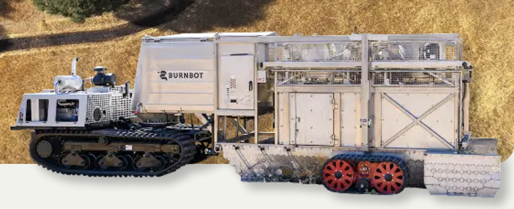
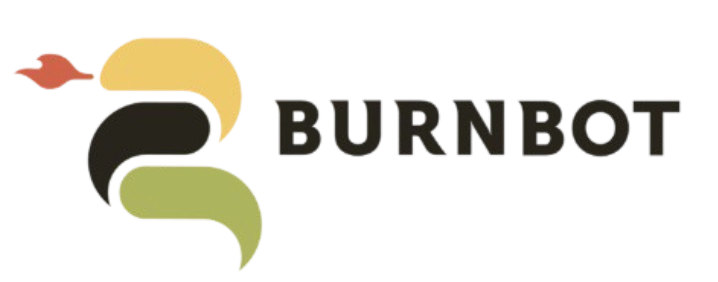

Obstacle Detection for BurnBot: Shielding Communities from Wildfires
2025
Mechanical Design & Rapid Prototyping (DFMA)
Sensor Integration (Potentiometer)
Mechanical Obstacle Detection Systems
Material Selection for Harsh Environments
Kinematic Modeling


Context / Problem 🔍:
Wildfire mitigation often relies on creating firebreaks, but conventional methods are labor-intensive and difficult to perform safely at scale. BurnBot is developing a semi-autonomous robotic system to automate this process, but its onboard torches are vulnerable to hard obstacles such as rocks, stumps, and dense shrubbery. Our challenge was to design an obstacle detection system that could identify the height of damaging obstacles in real time while ignoring softer vegetation like grass that the torches can safely pass through.
My Role 🛠️:
Contributed to the design, prototyping, and validation of a mechanical obstacle detection system for BurnBot. Worked on blade-array mechanism development, material and thickness selection, shaft and mounting design, sensor integration, and iterative prototype refinement. Also supported system-level testing and development of a final-intent integration concept for mounting the mechanism onto BurnBot.
Solution Summary 💡:
Developed a contact-based mechanical sensing system that uses spring steel blades mounted to a rotating shaft with an encoder to measure obstacle height. When the blades contact a rigid obstacle, shaft rotation is measured and converted into height using a trigonometric model. Torsion springs provide adjustable resistance so the system can distinguish destructive obstacles from flexible brush, enabling BurnBot to raise its torches only when necessary.
Technical Highlights 🔧:
Designed a blade-array sensing mechanism that estimates obstacle height from encoder-measured shaft rotation using a kinematic/trigonometric model.
Evaluated multiple sensing approaches—including visual sensing, strain gauges, flex sensors, potentiometers, and encoders—and selected a mechanical contact-based solution for better robustness to occlusion, vibration, and brush interference.
Tested spring steel, stainless steel, and polycarbonate blade materials, selecting 0.042" spring steel for its ability to flex laterally without permanent deformation.
Improved blade reliability by refining geometry, including rounded corners to reduce snagging on logs and rough obstacles.
Integrated torsion springs and experimentally compared torque values, selecting dual 27 in-lb springs to improve obstacle tracking accuracy and reduce blade bounce.
Built and iterated a partial-scale prototype using an 80/20 aluminum frame, modular blade fixtures, a rotary encoder, Arduino-based readout, and mock torch actuation.
Designed for serviceability and low-volume manufacturability by making blades and fixtures easy to replace without disassembling the full mechanism.
Results / Key Outcomes 🏁:
Delivered a proof-of-concept mechanical obstacle detection prototype capable of measuring incoming obstacle height and transmitting that information electronically.
Validated key design choices through iterative testing of blade material, blade thickness, sensor type, spring torque, and mounting configuration.
Produced a final-intent integration concept showing how the system could be scaled and mounted onto BurnBot for real-world operation.
Created a robust, modular design tailored for harsh outdoor environments involving water exposure, vibration, and intermittent high-temperature conditions.